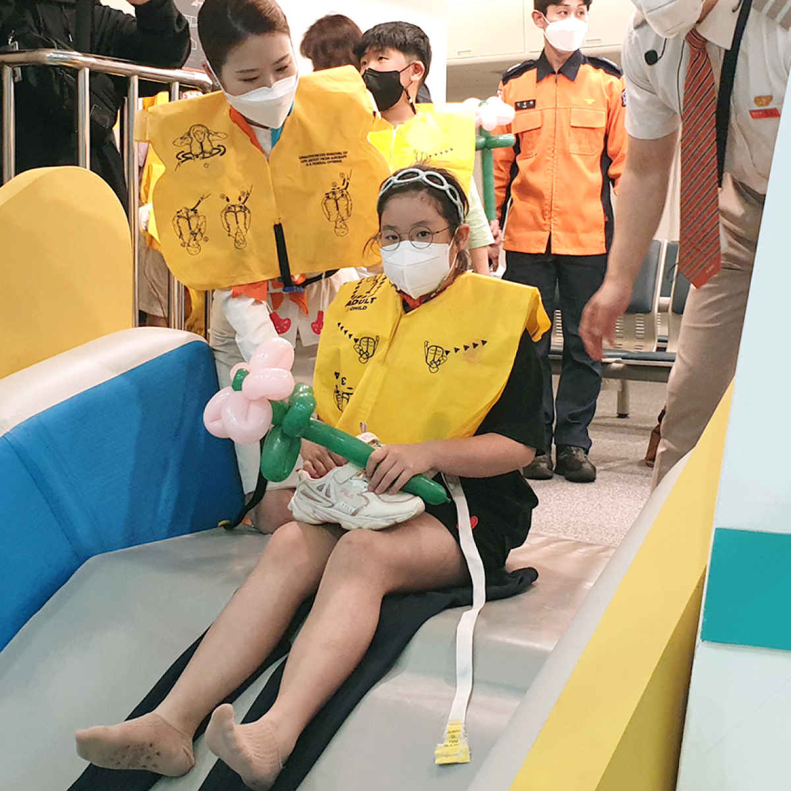
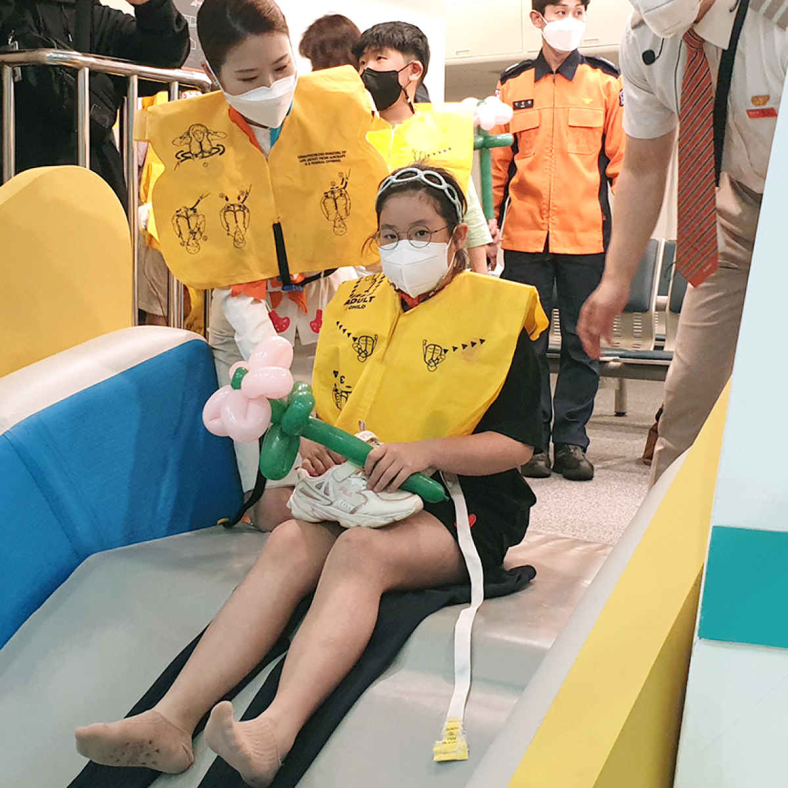

지속 가능한 경영을 위해
애경그룹이 진행하고 있는
주요 ESG 활동을 소개합니다.
Social01
애경그룹 EHS 협의체 구축으로 현실성 있는 ESG경영 실천
애경산업과 애경케미칼은 지난해 안전환경보건
(EHS) 협의체를 만들어 안전한 사업장 구축으로
중대재해를 예방하는 등 현실성 있는 ESG경영을
실천하고 있습니다.
애경그룹 내 주요 화학 계열사였던 애경유화,
애경화학, AK켐텍이 애경케미칼로 합병되기 전인
2021년 3월부터 주도적으로 협의체를 만들어
상호존중의 원칙하에 매 분기 미팅을 개최해
각 사 우수 사례와 아차사고(Near Miss: 작업자의
부주의나 설비 결함 등으로 사고가 일어날
뻔했으나 직접적인 사고로는 이어지지 않은 상황)
사례 공유, 안전환경보건 법령과 동향 모니터링
등을 통해 안전한 사업장 만들기와 상호역량
강화를 도모하고 있습니다.
애경그룹은 안전환경보건 경영 강화를 위해 우선
안전환경보건 협의체를 주축으로 전 계열사의
안전환경보건 수준을 향상시키는데 집중하고
있으며, 협의체를 운영하며 안전환경보건 전문가
집단을 육성·활용해 개선이 필요한 계열사를
적극 지원할 예정입니다. 사내 전문가와 외부
전문가로 구성된 진단팀을 꾸려 그룹 내 45개
사업장의 안전환경보건 진단을 실시한 바 있으며
EHS 진단을 통해 확인된 사업장 내 유해·위험
요소를 선제적으로 제거하고, 시설·설비·인력에
대한 과감한 투자를 통해 안전환경보건경영
시스템의 기반을 마련하고 있습니다.
중대재해처벌법 제정과 산업안전보건법 강화
등으로 안전환경보건 이슈가 사업의 성패를 가를
수 있는 요인이 된 만큼, AK홀딩스는 현실성 있는
ESG경영 실천을 위해 각 분야 별로 구체적이고
명확한 계획을 세우고 실행에 옮기며 직원과
고객의 안전과 건강을 최우선 순위에 두는
글로벌 수준의 안전환경보건 경영시스템을
구축할 계획입니다.
Social02
제주보육원 어린이 영어교육, 애착인형 전달 등 지역사회 나눔활동 지속
제주항공의 객실승무원들로 구성된 영어자원 봉사단은 2007년부터 매주 제주보육원을 방문해 영어교육 봉사활동을 15년째 진행하고 있습니다. 매주 진행되는 영어교육 외에도 보육원 어린이들을 정기적으로 서울로 초청해 영어마을, 통일전망대 등을 견학하며 다양한 경험을 쌓아주는 활동을 펼쳐왔으며, 영어를 가르쳤던 제주보육원 출신 대학생들에게 등록금을 전달하기도 했습니다.
또한 제주항공은 2011년 열린의사회와
업무협약을 맺은 이후 매년 2회씩 제주항공이
취항하는 아시아 각 지역에서 해외 의료봉사
활동을 펼치고 있습니다.
제주항공은 의료진의 항공이동 편의를 제공하며,
자발적으로 참여하는 직원들로 자원봉사단을
꾸려 현지에서 공동봉사활동을 진행해 왔으나
지난 2020년에는 코로나19로 인해 국내에서
진행했습니다.
이밖에 2016년부터 매월 서울지역 아동복지
센터와 노인종합복지관 등을 방문해 봉사활동을
펼치고 있으며, 2018년부터는 객실승무원들이
한 땀 한 땀 직접 바느질해 애착인형을 만들어
갓난아이를 보살피는 전국 각지의 보육시설에
전달하고 있습니다.
Social03
PB상품 개발 및 지역 대학 산학협력 등 지역사회와의 상생 위해 노력
제주항공은 ‘제주’ 제품의 판로 확대와 동시에
브랜드 홍보는 물론 지역경제 활성화에 도움을
꾀하는 등의 지역과의 상생모델도 적극적으로
추진하고 있습니다.
제주지역 업체들이 생산하는 상큼하귤, 제주
흑돼지육포와 말육포 등을 자체브랜드
(PB∙Private Brand) 상품으로 판매하는 등
제주지역 생산기업과 농가에 실질적인 도움이 될
수 있도록 판매활동을 지속하고 있습니다. 또한
재일음악가 양방언의 ‘Prince Of Jeju’나
성시경의 ‘제주도의 푸른밤’을 국내선에서
기내음악으로 사용하여 여행자에게 제주에서
생길 새로운 경험에 대한 기대, 그리고
여행지에서의 즐거운 기억을 떠올리게 하고
제주를 알리는데 적극 동참하고 있습니다.
제주 여행객들을 대상으로 제주공항 도착 시
방송되는 기내 방송을 통해 아름다운 제주도의
환경을 보존하기 위한 ‘쓰레기 되가져 오기’
활동에 참여를 독려하는 활동도 지속적으로
진행하고 있습니다.
 

한편 제주항공은 지난 2월부터 한국과학창의 재단이 주최하는 교육기부사업에 참여해 객실훈련팀 주관으로 교육기부 프로그램을 격월로 운영하고 있습니다. 고등학생을 대상으로 진행하는 객실승무원 진로체험 교육기부 프로그램으로 제주항공 객실승무원 직무에 대한 수업과 안전교육 중 실생활에 유용하게 쓸 수 있는 심폐소생술(CPR), 현직 객실승무원과의 질의응답 등이 진행되며, 교육기부 프로그램 수료증이 제공됩니다. 이와 함께 제주항공은 항공안전에 대한 의식을 높이기 위해 지역별 주요 대학의 항공관련 학과 등과 산학협력을 맺어 안전관리체계와 공정문화 형성 등의 항공안전 교육도 진행하고 있으며, 2022년 3월 명지전문대 항공서비스과를 시작으로 광주대, 극동대 등과 산학협력을 추진하고 있습니다.
Social04
사랑과 존경의 실천을 위한 나눔과 배려 활동
애경산업은 다양한 사회공헌 활동을 통해 상생을
실천하고 있습니다. 그 일환으로 지난 2012년
서울시와, 서울사회복지공동모금회와 함께
서울시의 저소득층을 지원하는 ‘따뜻한 동행,
아름다운 나눔’ 사업을 시작해 지난해까지
10년째 서울시 관내 어려운 이웃을 위한 지원을
하고 있습니다.
애경산업은 코로나19 대유행 속에서 지역사회를
위해 헌신하고 있는 의료진 등을 위한 사회공헌
캠페인도 진행하고 있습니다. 위생 전문 브랜드
랩신이 진행하는 ‘CLEAN to PROTEC(클린 투
프로텍트)’ 캠페인의 일환으로 코로나19의
대유행 속 방역 최전선에서 헌신하는 의료진을
위해 전국 대학병원 등에 21억원 상당의 손소독제
35만개를 지원했으며 헌신적인 의료 봉사로
모범이 된 간호장교를 위해 국군간호사관학교에
10억원 상당의 자사 제품을 기부했습니다.
토탈 오럴케어 브랜드 2080은 구강보건의 날을
맞아 대한민국을 수호하는 육군·소방·경찰에
2억원 상당의 구강용품을 전달했습니다.
이외에도 미혼 청소년한부모를 위한 상담소
‘봄날’ 운영, 다문화 가정을 위한 ‘독도·울릉도
탐방 힐링캠프’, ‘이주배경청소년 장학금’,
청소년을 위한 ‘도서기증’, ‘재능인재 장학생
응원꾸러미’, ‘디딤씨앗통장’ 등의 사회공헌
활동을 진행하며 사회적 편견으로 인해 어려움을
겪는 소외계층을 위해 기여하고 있습니다.